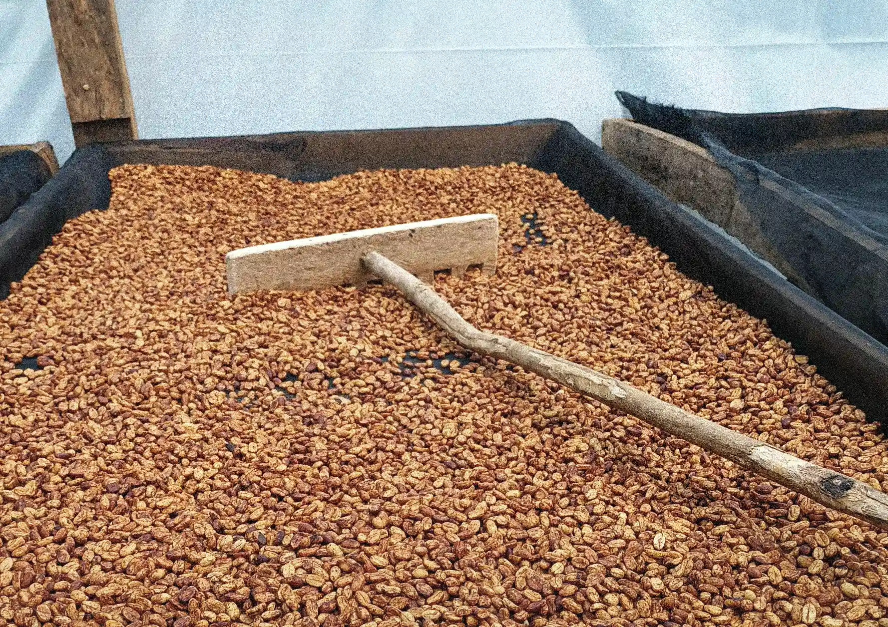

02 / Método
Precisión
Cada curva de tostado es una decisión. Temperatura y tiempo dialogan hasta encontrar el equilibrio.
No tostamos café. Observamos el momento exacto en que la materia se transforma en memoria.

Cada curva de tostado es una decisión. Temperatura y tiempo dialogan hasta encontrar el equilibrio.
“El tostado no transforma el café, revela lo que ya estaba ahí.”